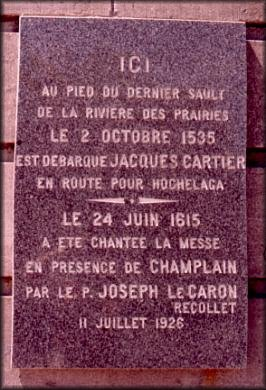
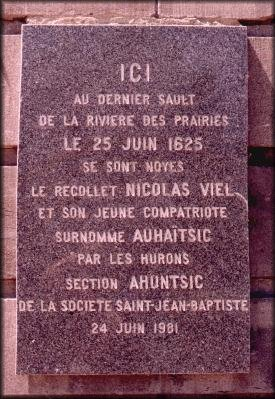
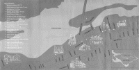
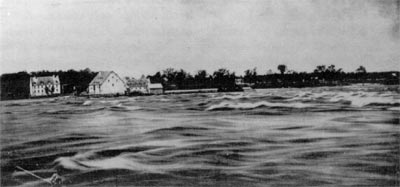

Les
Charette de notre lignée, de la
troisième à la cinquième génération, vivent au Sault-Au-Récollet. Mais, en
fait, où est-ce exactement?
HISTOIRE DU SAULT-AU-RÉCOLLET
LE TÉMOIN DES PREMIERS INSTANTS DE LA
NOUVELLE-FRANCE
Prérequis: dans la langue de nos ancêtres, un sault signifie un rapide dans
une rivière. Aussi, y a-t-il Sault-Saint-Louis, Sault-Sainte-Marie,
Long-Sault, Grand-Sault, et des centaines d'autres... et même les Sauteux, une nation amérindienne
vivant dans les Pays d'en Haut.
 Lorsqu'on remonte le Saint- Laurent en longeant la
rive nord, c'est la rivière des Prairies qui semble être la
continuation du fleuve. En 1535, c'est au pied du Gros-Sault que
Jacques Cartier dut immobiliser ses barques. Les chercheurs en
sont convaincus à cause de divers facteurs, notamment la distance
qu'il dit avoir franchie à pied dans l'île pour atteindre la bourgade
d'Hochelaga et la description des arbres qui jalonnaient les
sentiers. Cartier trouve une nation iroquoise très bien
organisée, entourée de grands champs cultivés et vivant dans
une bourgade aussi bien structurée qu'une ville d'Europe. Lorsqu'on remonte le Saint- Laurent en longeant la
rive nord, c'est la rivière des Prairies qui semble être la
continuation du fleuve. En 1535, c'est au pied du Gros-Sault que
Jacques Cartier dut immobiliser ses barques. Les chercheurs en
sont convaincus à cause de divers facteurs, notamment la distance
qu'il dit avoir franchie à pied dans l'île pour atteindre la bourgade
d'Hochelaga et la description des arbres qui jalonnaient les
sentiers. Cartier trouve une nation iroquoise très bien
organisée, entourée de grands champs cultivés et vivant dans
une bourgade aussi bien structurée qu'une ville d'Europe.
Les documents bibliographiques originaux indiquent aux
chercheurs que la bourgade Hochelaga que Jacques Cartier visita en
1535 était sise dans la cuvette du mont Royal, à proximité du
Lac aux Castors. D’ailleurs, Hochelaga, mot amérindien,
signifie “lac de castors”. Aujourd'hui, seul le parc
Mont-Royal en prolonge le passé.
 En
1615 c'est Champlain
qui est au Sault-au-Récollet. Selon son propre témoignage, la rivière
Des Prairies prit le nom de l'un de ses compagnons, un
Malouin, qui s'y aventura par erreur.
La
première messe sur l'île du Mont Royal
La première messe célébrée sur
l'île de Montréal eut lieu le 24 juin 1615, sur la rive de la rivière Des Prairies, par le Père Denis Jamet assisté du Père Joseph Le Caron.
De
1535 à l'implantation de Ville-Marie en 1642, le Sault-au-Récollet fut
témoin des événements qui marquèrent les débuts de l'histoire de
l'île du Mont Royal, une île qui finalement prit le nom de Montréal. Le
développement de l'île se déplace de la rivière Des Prairies vers
le fleuve Saint-Laurent avec la venue de Maisonneuve.


ORIGINE DU NOM
En 1625, le père Nicolas
Viel, récollet, et un jeune Français,
que les Hurons surnommaient Auhaitsic (Ahuntsic), meurent tragiquement à
la hauteur d'un rapide de la rivière des Prairies dans des circonstances
qu'on ne pourra sans doute jamais élucider. Depuis lors, on connaît cet
endroit sous le nom de Sault-au-Récollet.
À la fin du 17ème siècle, les Sulpiciens font construire le
fort de Lorette et y installent à proximité des Amérindiens convertis
au catholicisme ou en voie de l'être. Ceux-ci vivaient jusqu'alors à
l'ombre du fort de la montagne, près de Ville-Marie. En 1721, les
sulpiciens transféreront la mission à Oka.
Toujours à la fin du 17ème siècle, les seigneurs de l'île de
Montréal commencent à concéder des terres à des colons d'origine française
le long de la rivière des Prairies, à la future côte du Sault
(aujourd'hui le boulevard Gouin) et, plus au sud, à la côte Saint-Michel
(dans l'axe de l'actuelle rue Jarry).
Vers 1724-1726, Simon Sicard, engagé par les Sulpiciens,
construit une digue entre l'île de la Visitation et l'île de Montréal
ainsi qu'un moulin à scie à cet endroit. Entre 1726 et 1753, deux
moulins à farine y seront également bâtis.
En 1736, le sulpicien Jean-Baptiste de Guay-Desenclaves, qui
exerce son ministère dans la chapelle du fort Lorette, commence à tenir
les registres de la paroisse du Sault-au-Récollet.
De 1749 à 1751, c'est la construction de l'église de la
Visitation-du-Sault-au-Récollet, la plus vielle église encore
existante de l'île de Montréal.


En 1845 est fondée la municipalité de la paroisse du
Sault-au-Récollet. Cependant, dès la fin du 19ème siècle elle se rétrécit
au fur et à mesure que se forme, à même son territoire, plusieurs
autres municipalités (Saint-Léonard, Villeray, Ahuntsic, Bordeaux et
Saint-Michel). La superficie qui en reste devient la municipalité de
Montréal-Nord en 1915.
|
Aujourd'hui, les sauts de la rivière
ne sont qu'un souvenir.
Ils ont disparu lors de la construction de
la centrale hydroélectrique entre l'île de Montréal et l'île Jésus,
à la fin des années 20, qui a fait grimper le niveau du cours
d'eau de six mètres. L'endroit n'a plus le charme d'antan,
quoique...

Depuis que la Communauté urbaine de
Montréal, de concert avec le ministère de la Culture, a investi
des millions de dollars pour
revitaliser l'île de la Visitation qui borde le quartier, et
restaurer les bâtiments s'y trouvant, l'endroit vaut la peine qu'on s'y perde.
QUELQUES VIEILLES IMAGES DES RAPIDES

Ce dessin ancien signé Duncanson Pinx représente
le moulin du Gros-Sault et la décharge de son canal, alors qu'un
radeau défie les eaux tumultueuses.

Ces deux clichés ont été réalisés au même
endroit, à Bordeaux, celui du haut en 1929 et l'autre, en 1931.
Submergés par l'élévation du niveau de l'eau résultant de la
construction de la centrale du Saut-su-Récollet, les flots rageurs
du Gros-Sault se sont transformés en une surface calme. (photos
H. Sutcliffe, Laval-des-Rapides).

Même en face de l'Abord-à-Plouffe (aujourd'hui
Chomedey), la rivière
des Prairies était turbulente, comme le démontre cette photo de
Notman (musée McCord).
|
Retour vers le haut
|

 Le
23 mars 1749, Jean-Baptiste naît au Sault-au-Récollet, comme son père
avant lui. C'est son
Le
23 mars 1749, Jean-Baptiste naît au Sault-au-Récollet, comme son père
avant lui. C'est son